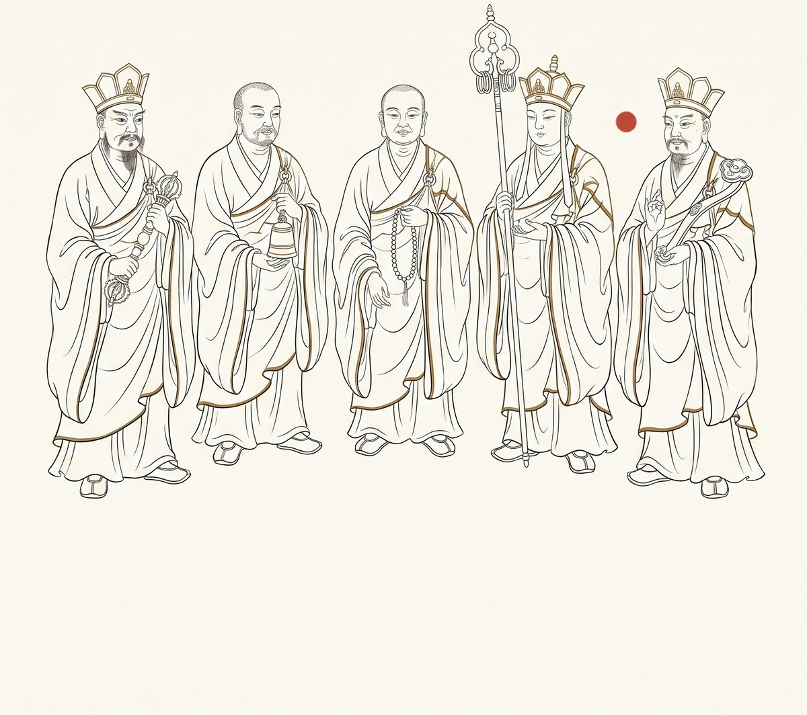

五方揭谛——取经路上最沉默的守护者

轨标：个人创作 来源：主题六.txt 章节 "# 五方揭谛——取经路上最沉默的守护者" 双索引链接： - 正向：CHANGELOG.md W285 段（待补） - 反向：file-index.md 本文件条目（待补） W285（git 创建提交溯源 · W424 回填） 核验状态：未核验
导语
取经路上，玄奘身边不只有三个徒弟和一匹马。暗处还有三十九位神祇轮值守护。四值功曹管记录，六丁六甲管战斗，而五方揭谛管守护。他们的职责只有一条：站在玄奘身边，寸步不离。
五方揭谛是五个方位神——金头揭谛镇东，银头揭谛镇西，波罗揭谛镇南，摩诃揭谛镇北，波罗僧揭谛镇中。中是最特殊的位置——不是东南西北之外多出来的第五个方向，是玄奘本人的位置。波罗僧揭谛守在取经人三尺之内，无论白天黑夜，无论醒着还是睡着，无论悟空在还是不在。他是五方揭谛里唯一一个被观音亲口指定的人——观音在盂兰盆会上说：波罗僧揭谛，你守取经人，寸步不能离。他说：好。
五方揭谛从不说话。他们的沉默和四值功曹不同——四值功曹的沉默是职业性的，是记录守则要求的不偏不倚。五方揭谛的沉默是本质性的——他们没有嘴。不是被缝住，不是被封印，是天生的。揭谛在梵语里的意思是“去”——从痛苦中渡过去，从执念中渡过去，从语言中渡过去。一个真正的揭谛不需要说话，因为语言是执念的载体，而揭谛是执念的对面。
他们站在取经人身边，不说话，不记录，不降妖，只是站着。站了十四年。
一、五个方向，五座不动山
五方揭谛的站法极固定。从取经人出发那天开始，他们的位置就没有变过。
金头揭谛站在玄奘正前方偏东。他的身体微微前倾，面朝取经人接下来要走的路。路是往西的，但他镇的是东——东边是大唐，是来处。他的职责不是看前面的妖怪，是护住背后的来路。取经人回头的时候，东边应该有人在。他是五方揭谛里资历最老的——在灵山脚下的金刚座旁边站了无数劫，等一个需要镇守东方的任务。他的头是金的——不是镀金，是灵山功德池水在无数劫浸泡中渗进骨质的矿化层。观音说，等金色渗到最深处，金头揭谛就能成佛。金头揭谛说，不急。东边还有路。
银头揭谛站在玄奘正后方偏西。他的背永远是直的——不是挺拔，是僵直。西边是灵山，是去处，也是敌人最容易从背后偷袭的方向。十四年里，他替玄奘挡过无数次从背后袭来的妖风、暗器、毒雾。背上有无数道旧痕——不是伤口，是灵体被击打后留下的极细极淡的裂纹，像古瓷上的冰片纹，从肩胛骨蔓延到腰椎。值日功曹在白绫簿里记录过一次：“妖风自西来，银头揭谛以身挡之，背裂一道。”他没有写的是，银头揭谛在那道裂缝发出极轻极细的微响之后，连呼吸的节奏都没有变。
波罗揭谛站在玄奘正南方。南边是火——火焰山在南，盛夏的毒日在南。他的职责是挡住所有从南边来的热毒、瘴气、火妖。他的身体极枯瘦——几千年的南火熏烤，把他烤得像一截被烈日烤透了的老树根。夏夜极闷极热时，他会稍微侧转向南，用自己枯瘦的身板挡住半夜从南方荒原漫过来的瘴气。
摩诃揭谛站在玄奘正北方。北边是水——通天河在北，黑水河在北，流沙河在北。他的职责是挡住所有从北边来的寒潮、洪水、水妖。他是五方揭谛里最沉的一个——不是体重，是站姿。脚陷进地面极深，每处扎营地北边的泥土都被踩出两个极圆极深的凹坑。值日功曹记录过这些凹坑的深度变化——某年通天河北岸，摩诃揭谛双脚入泥三寸，翌日水退，脚未移。他不是不能移——水妖在水下潜伏了一整夜，他只要动一下，妖怪就会从泥里蹿出来。他站了一整夜，天亮水退，双脚还嵌在泥里同一个位置。凹坑里积着通天河极细极淡的冰屑。
波罗僧揭谛站在正中间，玄奘的右手边三尺之内。取经人在马上，他从马下举头，刚好看到玄奘握缰绳的手；取经人在地上走，他跟在侧后，袈裟下摆每一次拂过他的脸颊——经年累月，他脸上被锦斓袈裟的角料磨出了极淡极细的痕迹。他是五方揭谛里唯一被观音亲口指定的人。观音没有选武力值最高的摩诃揭谛，没有选资历最老的金头揭谛。她选了波罗僧揭谛——因为他是五个人里最安静的。不是不说话——揭谛都不说话。是心跳最慢。观音在紫竹林里用杨柳枝点过他的胸口，感觉到了——波罗僧揭谛的心跳极慢极沉极稳，每一次心跳之间的间隔刚好够玄奘念完一遍《心经》。观音说，就是你。
二、紧箍咒响起的时候
五方揭谛是观音的人。四值功曹属天庭吏部，六丁六甲属天庭兵部。只有五方揭谛，编制在南海紫竹林——观音自己的道场。他们不受任何其他系统调遣，只对观音一人负责。
三打白骨精那次。玄奘念紧箍咒，悟空满地打滚，头往石头上撞。贬书写好，悟空跪接，腾云而去。玄奘转身掩面。四值功曹在云头上全记下来了。六丁六甲守在山路外围。
五方揭谛在做什么？波罗僧揭谛站在玄奘身后三尺。他看不见玄奘的脸——玄奘转身掩面时背对着他。但他听到了玄奘的心跳。掩面那一刻，心跳乱了——不是快，是空。像钟声敲了一下之后那极长极静的回音。波罗僧揭谛没有上前——守则不允许他碰取经人。他只是站在原地，用自己极慢极稳的心跳，和玄奘空了的那一拍心跳在空气中轻轻碰了一下。玄奘把手从脸上放下来，转身说，走吧。波罗僧揭谛跟在他身后。三尺，没变。
三、深夜
取经路上最安静的时刻是深夜。
悟空睡在树杈上，八戒的鼾声震得茅草往下掉灰，沙僧睡在包袱旁边，一只手搭在降妖宝杖上。玄奘睡在草席上——有时是驿馆的床，有时是破庙的蒲团，有时只是路边一块平整的石头上铺了一层干草。
五方揭谛不睡。他们只是站在五个方向，不动，不说话，不闭眼。四值功曹的排班到子时换人，六丁六甲的巡逻到丑时轮替。只有五方揭谛没有排班——没有轮换，没有替班，没有休息。十四年，每天十二个时辰，五个方向，五个人。
波罗僧揭谛有时会在深夜听到玄奘在梦里翻身。做噩梦时会侧身，把脸埋进手臂里，呼吸变快。波罗僧揭谛知道他在做什么梦——站了太久，久到能从一个人的呼吸节奏里听出他的梦。梦到贬书，呼吸先急后停；梦到凌云渡，呼吸由急转平；梦到长安，呼吸变慢变深，从胸口深处发出一声极轻极柔的气音——像有人在很远的地方叫他的名字，但他没有回头。
波罗僧揭谛在心里数他的呼吸。一呼一吸，数了一整夜。天亮了。悟空从树上跳下来，八戒从草棚里拱出来。玄奘睁开眼，起身，在溪边洗漱，盘坐在石头上念《心经》。波罗僧揭谛的心跳还是极慢极沉极稳，三尺，没变。
四、三件小事
波罗僧揭谛不记录，但他记得。他没有簿子，没有指尖金印。他的记忆储存在心跳里——每一次心跳之间的间隔里，藏着十四年中他看到的三件小事。
第一件。通天河畔扎营，玄奘夜里起来小解。走到河边，月光极亮极白。他蹲下去，从河滩上捡起一块极圆极滑的青卵石，在月光下看了很久，然后放进怀里——极小心，像把一颗珠子放在天鹅绒上。那是通天河特有的青卵石，质地极密极凉，握在手心里一整天都不会变暖。但玄奘把它放进怀里，之后每天都会极轻极慢地摸一下胸口。凌云渡上船之前，玄奘从怀里掏出那块石头，放进水里。石头沉进凌云渡，水面上荡开一圈极细极淡的涟漪。玄奘上了船，没有回头。
第二件。沙僧病了一天，拉肚子，蹲在路边站不起来。玄奘让八戒替沙僧挑行李。八戒极不情愿——自己一上手才发现扁担沉得肩膀发酸。他嘟囔着换肩膀，悟空在前面说，老猪，挑不动就说。八戒说，挑得动。第二天沙僧病好了，重新挑起行李，把扁担还给八戒时，八戒的手极轻极稳，像递一块极烫极重不能摔的东西。沙僧说，多谢二哥。八戒说，谁是你二哥。
第三件。女儿国。玄奘在国王面前说“发过誓”。他没有说谎——确实在观音面前发过，在长安大雁塔发过。但波罗僧揭谛听到他说“发过誓”时，心跳变了——不是变快，是变慢了。极慢极沉，像用真话压住真心。真话和真心之间只隔着一层极薄的纸。女儿国国王在通关文牒背面塞了一张纸条，什么都没写，只有凤印。那张纸条后来夹在通关文牒里，被玄奘带回大雁塔。藏经阁整理员在档案卡上写：“文牒附笺，无字。疑为误夹。”波罗僧揭谛没有嘴，不能纠正这个错误。
五、凌云渡
取经人到达凌云渡那天，五方揭谛站在南岸。无底船从雾里滑出来，玄奘上船，低头看见水里漂着一具尸体——是他自己的肉身。船靠北岸，师徒走上灵山石阶。
五方揭谛停在南岸。他们不渡河——揭谛不能渡凌云渡，渡过去就会消失。护送任务到此为止。金头揭谛转向东，银头揭谛转向西，波罗揭谛转向南，摩诃揭谛转向北。波罗僧揭谛站在原地，面向凌云渡。右手边三尺之内没有人了。
他在心里数玄奘的心跳——从南岸上船，船到河心，看到旧我尸体，合十，上岸。心跳从快到慢，从慢到稳，然后断了。不是死了——是渡过去了。凌云渡的水隔断了一切执念。玄奘上岸之后的心跳，不再是那个他数了十四年的心跳。旧我的心跳已和尸体一起沉在了水底。
波罗僧揭谛把右手举到胸前——第一次。他在取经路上站了十四年，从未动过手。手掌在胸口三尺之处按了一下，那是他守了十四年的位置。然后把手放下，转身，沿着来路往回走。
他回到紫竹林。观音站在莲池边，往池里放新开的蓝莲。波罗僧揭谛跪下，用右手在胸口三尺之处按了一下。观音把最后一朵蓝莲放进水里，说：我知道。你守了十四年。
波罗僧揭谛伏在地上，额头贴着紫竹林湿软的泥土。观音把手放在他头上，说：你护了他十四年，追着他的心跳追了十万八千里。你没有嘴——你的心跳就是你的话。我听到了。波罗僧揭谛的心跳在那一刻不再慢了。它回到本来的速度——不快不慢，不追不赶。他的心跳终于可以只是他自己的心跳了。